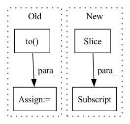

Pattern ID :22407

Before Change
index = x_test.index
x_test = torch.from_numpy(x_test.values).float()
x_test = x_test.to(self.device)
self.sfm_model.eval()
with torch.no_grad():
if self.device != "cpu":
After Change
else:
end = begin + self.batch_size
x_batch = torch.from_numpy(x_values[begin:end]).float()
if self.device != "cpu":
x_batch = x_batch.to(self.device)
In pattern: SUPERPATTERN
Frequency: 3
Non-data size: 4
Instances
Fragment ID: 70923403
Project Name: microsoft/qlib
Commit Name: 64b7748033326b0aaa3c4c907ccd9b2d353d553d
Time: 2020-11-25
Author: haouyw2@gmail.com
File Name: qlib/contrib/model/pytorch_sfm.py
M Class Name: SFM
N Class Name: SFM
M Method Name: predict(2)
N Method Name: predict(2)
M Parent Class: Model
N Parent Class: Model
M File Name: qlib/contrib/model/pytorch_sfm.py
N File Name: qlib/contrib/model/pytorch_sfm.py
M Start Line: 415
M End Line: 427
N Start Line: 420
N End Line: 445
'>
Before Change
pointer += server_payload["data"].classes
pointer = pointer % len(self.dataloader.dataset)
data = torch.stack(data).to(**self.setup)
labels = torch.stack(labels).to(device=self.setup["device"])
// Compute local updates
shared_grads = []
shared_buffers = []
for query in range(self.num_user_queries):
payload = server_payload["queries"][query]
parameters = payload["parameters"]
buffers = payload["buffers"]
with torch.no_grad():
for param, server_state in zip(self.model.parameters(), parameters):
param.copy_(server_state.to(**self.setup))
for buffer, server_state in zip(self.model.buffers(), buffers):
buffer.copy_(server_state.to(**self.setup))
// Compute the forward pass
outputs = self.model(data)
loss = self.loss(outputs, labels)
shared_grads += [torch.autograd.grad(loss, self.model.parameters())]
shared_buffers += [[b.clone().detach() for b in self.model.buffers()]]
shared_data = dict(gradients=shared_grads, buffers=shared_buffers,
After Change
for step in range(self.num_local_updates):
data = user_data[seen_data_idx: seen_data_idx + self.num_data_per_local_update_step]
labels = user_labels[seen_data_idx: seen_data_idx + self.num_data_per_local_update_step]
seen_data_idx += self.num_data_per_local_update_step
seen_data_idx = seen_data_idx % self.num_data_points
'>
Fragment ID: 70923416
Project Name: jonasgeiping/breaching
Commit Name: 1ab2867fea20551797c9aea8ae67099093ec7180
Time: 2021-10-01
Author: jonas.geiping@googlemail.com
File Name: breaching/cases/users.py
M Class Name: UserMultiStep
N Class Name: UserMultiStep
M Method Name: compute_local_updates(2)
N Method Name: compute_local_updates(2)
M Parent Class: UserSingleStep
N Parent Class: UserSingleStep
M File Name: breaching/cases/users.py
N File Name: breaching/cases/users.py
M Start Line: 151
M End Line: 187
N Start Line: 158
N End Line: 200
'>
Before Change
Update forward_rate_constants
self.forward_rate_constants = torch.zeros(
[self.T.shape[0], self.n_reactions]).to(self.device)
ln10 = torch.log(torch.Tensor([10.0])).to(self.device)
for i in range(self.n_reactions):
After Change
f1 = (lPr + C) / (N - 0.14 * (lPr + C))
F = torch.exp(ln10 * lF_cent / (1 + f1 * f1))
self.forward_rate_constants[:, i: i + 1] = \
self.forward_rate_constants[:, i: i + 1] * F
self.forward_rate_constants = self.forward_rate_constants * self.uq_A.abs()
'>
Fragment ID: 70923417
Project Name: deng-mit/reactorch
Commit Name: e52b04ba19b88ed0e36f61c83f09bbcd4c3704db
Time: 2020-07-01
Author: 41820879+WeilunQiu@users.noreply.github.com
File Name: reactorch/Solution.py
M Class Name: Solution
N Class Name: Solution
M Method Name: forward_rate_constants_func(1)
N Method Name: forward_rate_constants_func(1)
M Parent Class: nn.Module
N Parent Class: nn.Module
M File Name: reactorch/Solution.py
N File Name: reactorch/Solution.py
M Start Line: 273
M End Line: 324
N Start Line: 290
N End Line: 334